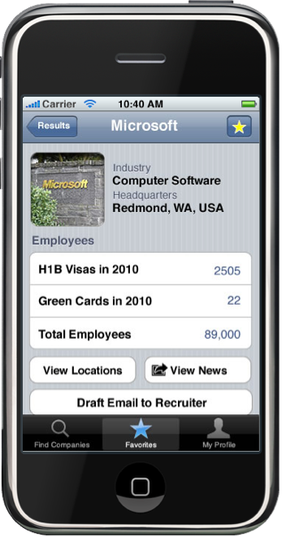

Incomer Careers for the iPhone
Intro
Incomer Careers in an iPhone app created to help internationals find companies in the U.S. that hire people from outside the countrys. Our focus is on helping internationals to navigate career fairs and to do on-the-go company investigation, so they can focus their attention on companies that they know have the ability to hire them. We started by zeroing in on our target user group via a persona. Next we created some looked at some of the competition and created initial designs to get at what we felt that persona represented. Finally, we revisited our design with background research with current and former visa employees as well as career center employees and companies. the final product can be seen on our solution page.
|  |
Our team is:
| Eric Dudiak | Ray Luong | David Randall | Kathryn Rivard |